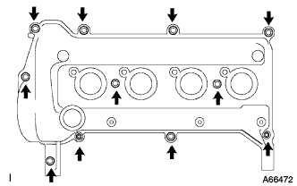

カムシャフト 取り外し |
| 1. エンジンアンダ カバー RH取りはずし |
ボルト2本およびスクリュ2本をはずす。
ナットをはずし、エンジンアンダーカバーRHを取りはずす。
| 2. シリンダヘッド カバー NO.2取りはずし |
 |
ナット４個をはずし、シリンダヘツドカバーNo.2を取りはずす。
| 3. ベンチレーション ホース切り離し |
 |
クリップをはずし、シリンダヘッドカバーよりベンチレーションホースを切り離す｡
| 4. ベンチレーション ホース NO.2切り離し |
クリップをはずし、シリンダヘッドカバーよりベンチレーションホースNo．2を切り離す｡
| 5. イグニッション コイル NO.1取りはずし |
イグニツシヨンコイルのコネクタおよびボルトをはずしイグニツシヨンコイル全数を取りはずす。
| 6. シリンダヘッド カバーSUB-ASSY取りはずし |
|  |
ボルトおよび９本およびナット２個をはずし、シリンダヘツドカバーをとりはずす。
| 7. カムシャフト NO.2取りはずし |
 |
 |
No.1シリンダ圧縮上死点セット．
クランクシャフトダンパを正回転させ、タイミングマーク(切り欠き)をチェーンカバー0°の位置に合わせる。
図の位置にカムシャフトタイミングギヤのタイミングマークがあることを確認する。
カムシャフトタイミングギヤのタイミングマークに対応するチェーンの各プレートにペイントマークを塗布する。
 |
ソケットヘキサゴンレンチ8を使用して、チエーンカバーサービスホールスクリユプラグを取りはずす。
 |
マイナスドライバーを使用して、チェーンテンショナサービスホールよりテンショナのストッパプレートを上げた状態で保持する。
 |
チェーンテンショナのストッパプレートを上げた状態からモンキーレンチを使用して、カムシャフトNo.2のサービス用六角部を少し右回転させ、チェーンテンショナのプランジャが押された状態にする。
モンキーレンチを保持し、プランジャが奥に入った状態からマイナスドライバーを取りはずす。
 |
チェーンテンショナのストッパプレートが下にさがり、ロックされた状態からストッパプレートの穴にφ3mmの棒または六角棒レンチを差し込む。
φ3mmの棒または六角棒レンチが抜け落ちないようにテープなどで固定しておく。
 |
カムシャフトNo.2のサービス用六角部をモンキーレンチで保持し、フランジボルトを緩める。
 |
図の順序で、カムシャフトベアリングキヤツプNo.1およびNo.2を取りはずす。
 |
カムシャフトNo.2を少し浮かした状態でフランジボルトをはずし、カムシャフトNo.2およびカムシャフトタイミングギヤを取りはずす。
| 8. カムシャフト取りはずし |
 |
図の順序で、カムシャフトベアリングキヤツプNo.2を取りはずす。
タイミングチェーンを手で保持し、カムシャフトを取りはずす。
 |
タイミングチェーンをロープまたは針金などで吊っておく。
| 9. カムシャフトタイミング ギヤASSY取りはずし |
カムシャフトをバイスに固定し、カムシャフトタイミングギヤASSYが回らないことを確認する。
 |
図のようにカムジャーナルの油穴4箇所をビニールテープなどで塞ぐ。
反対側の油穴(進角油穴、遅角油穴)2箇所を塞いでいるビニールテープに穴を開ける。
 |
ビニールテープに穴を開けた油穴(進角油穴、遅角油穴)2箇所に150ｋPa{1.5ｋｇｆ/ｃｍ 2} 程度のエア圧力を加える。
 |
上記の状態から遅角油穴側のエア圧力を弱めていくと、カムシャフトタイミングギヤASSYが進角方向に回転することを確認する。
カムシャフトタイミングギヤASSYが最進角位置まで移動したら、遅角油穴側のエア圧力を抜いた後に、進角油穴側のエア圧力を抜く。
 |
カムシャフトタイミングギヤASSYのフランジボルトを取りはずす。